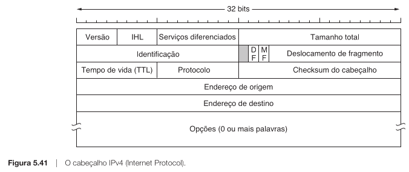
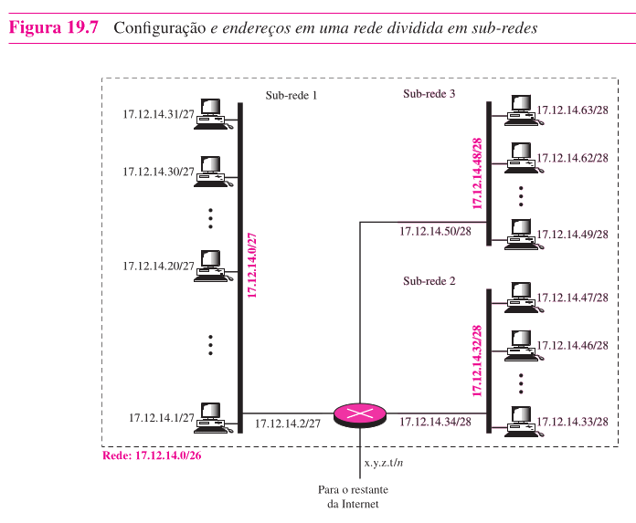
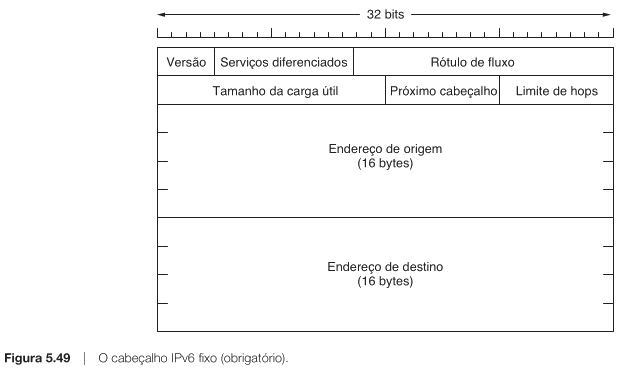

Professor: Gabriel Soares Baptista
Na aula passada, vimos a camada de rede como a camada que escolhe caminhos entre redes.
Hoje vamos concretizar essa ideia com o protocolo IP.
O IP oferece uma forma lógica de endereçar hosts e redes.
Tanenbaum 5.6.1 a 5.6.3, Forouzan capítulo 19 e apoio do capítulo 22 para encaminhamento.
Uma LAN Ethernet não representa a Internet inteira.
Se o endereço MAC identifica uma interface no enlace local, por que ele não basta para entregar dados pela Internet inteira?
O MAC não descreve uma posição lógica dentro de uma rede de redes.
| Endereço | Função |
|---|---|
| MAC | Entrega local no enlace atual |
| IP | Entrega lógica entre redes |
O MAC ajuda no próximo salto. O IP permite continuar a viagem.
Endereço IP não é “o MAC da Internet”. MAC identifica uma interface no enlace local. IP identifica logicamente uma interface em uma rede IP.
Seu notebook quer acessar um servidor fora de casa.
O quadro muda a cada enlace. O pacote IP mantém a direção lógica da comunicação.
O IPv4 trata cada pacote como um datagrama.
IPv4 é um protocolo sem conexão e de melhor esforço.
A rede fica simples. A confiabilidade pode ser tratada nas pontas, por protocolos como TCP.
Um datagrama IPv4 possui cabeçalho e dados.

| Campo | Ideia principal |
|---|---|
| Versão | Indica IPv4 |
| IHL | Tamanho do cabeçalho |
| Comprimento total | Tamanho do datagrama |
| TTL | Limita saltos |
| Protocolo | Indica TCP, UDP ou outro |
| Origem e destino | Endereços IPv4 finais |
O TTL evita que pacotes circulem indefinidamente.
| Etapa | TTL |
|---|---|
| Origem | 4 |
| Depois de $R_1$ | 3 |
| Depois de $R_2$ | 2 |
| Depois de $R_3$ | 1 |
| Depois de $R_4$ | 0 |
Quando chega a zero, o pacote é descartado.
tracerouteO TTL protege contra loops e também permite diagnóstico de caminho.
Um endereço IPv4 tem 32 bits.
192.168.1.34
$$ 192.168.1.34 = 11000000.10101000.00000001.00100010 $$
Cada número decimal representa um octeto.
Se o endereço IPv4 tem 32 bits, como um roteador sabe qual parte identifica a rede e qual parte identifica o host?
Um endereço IP precisa ser lido junto com seu prefixo.
192.168.1.34/24
$$ \underbrace{192.168.1}_{24\ bits\ de\ rede}.\underbrace{34}_{8\ bits\ de\ host} $$
O /24 diz quantos bits pertencem à rede.
Uma máscara tem 32 bits.
/24$$ 11111111.11111111.11111111.00000000 $$
$$ 255.255.255.0 $$
Considere o endereço:
192.168.1.34/24
Rede: 192.168.1.0/24
Host: 34
192.168.1.34 é um host dentro da rede 192.168.1.0/24.
A rede não são sempre os três primeiros números. Isso só acontece em prefixos como /24. A separação real depende da máscara.
Historicamente, o IPv4 usou classes.
| Classe | Prefixo padrão | Uso conceitual |
|---|---|---|
| A | /8 |
Poucas redes muito grandes |
| B | /16 |
Redes médias |
| C | /24 |
Muitas redes pequenas |
As classes tinham tamanhos fixos e desperdiçavam endereços.
CIDR significa Classless Inter-Domain Routing.
Abandonar tamanhos fixos de classes e usar prefixos flexíveis.
192.168.10.0/24
10.40.0.0/20
172.16.8.0/21
CIDR permite alocar blocos mais próximos da necessidade real.
Uma organização pode receber um bloco e dividi-lo internamente.
192.168.10.0/24
Se uma organização recebe um bloco único, por que ela não deveria colocar todos os hosts na mesma rede?
Sub-redes criam divisões lógicas menores dentro de um bloco maior.

Em uma rede /24, existem 8 bits de host.
$$ 32 - 24 = 8 $$
Para criar 4 sub-redes, precisamos de 2 bits.
$$ 2^2 = 4 $$
O novo prefixo será:
$$ /24 + 2 = /26 $$
Com /26, sobram 6 bits para hosts.
$$ 32 - 26 = 6 $$
Logo, cada sub-rede tem 64 endereços.
$$ 2^6 = 64 $$
Em IPv4 tradicional, dois endereços ficam reservados.
$$ 64 - 2 = 62 $$
Divida a rede abaixo em 4 sub-redes.
192.168.10.0/24
| Sub-rede | Intervalo | Broadcast |
|---|---|---|
192.168.10.0/26 |
.0 a .63 |
.63 |
192.168.10.64/26 |
.64 a .127 |
.127 |
192.168.10.128/26 |
.128 a .191 |
.191 |
192.168.10.192/26 |
.192 a .255 |
.255 |
Qual é a sub-rede do host abaixo?
192.168.10.77/26
/260, 64, 128, 192
Sub-rede: 192.168.10.64/26
Broadcast: 192.168.10.127
Hosts: 192.168.10.65 a 192.168.10.126
| Prefixo | Máscara | Bloco | Hosts úteis |
|---|---|---|---|
/25 |
255.255.255.128 |
128 | 126 |
/26 |
255.255.255.192 |
64 | 62 |
/27 |
255.255.255.224 |
32 | 30 |
/28 |
255.255.255.240 |
16 | 14 |
/29 |
255.255.255.248 |
8 | 6 |
/30 |
255.255.255.252 |
4 | 2 |
Máscara maior não significa rede maior. Um prefixo maior usa mais bits para rede e deixa menos bits para hosts.
Com sub-redes, o endereço IPv4 ganha três níveis conceituais.
O roteador consulta a tabela de roteamento usando o IP de destino.
Escolher a rota válida mais específica.
Tabela de roteamento:
| Prefixo | Saída |
|---|---|
10.0.0.0/8 |
interface A |
10.20.0.0/16 |
interface B |
10.20.30.0/24 |
interface C |
Destino:
10.20.30.45
Escolha correta: 10.20.30.0/24, pela interface C.
O NAT prolongou a vida do IPv4.
Sub-rede divide blocos. NAT traduz endereços.
Dentro de casa, seu computador pode ter:
192.168.1.34
| Bloco privado | Uso típico |
|---|---|
10.0.0.0/8 |
Redes privadas grandes |
172.16.0.0/12 |
Redes privadas intermediárias |
192.168.0.0/16 |
Redes domésticas e pequenas redes |
O IPv6 surgiu como resposta de longo prazo ao esgotamento do IPv4.
| Versão | Endereço | Escrita comum |
|---|---|---|
| IPv4 | 32 bits | decimal pontuada |
| IPv6 | 128 bits | hexadecimal com dois-pontos |
Forma completa:
2001:0db8:0000:0000:0000:ff00:0042:8329
Forma abreviada:
2001:db8::ff00:42:8329
Zeros à esquerda podem ser omitidos e uma sequência de zeros pode ser comprimida.
O IPv6 tem cabeçalho base fixo de 40 bytes.
Facilitar o processamento pelos roteadores.

| Aspecto | IPv4 | IPv6 |
|---|---|---|
| Endereço | 32 bits | 128 bits |
| Checksum | No cabeçalho | Removido do cabeçalho base |
| Fragmentação | Pode ocorrer em roteador | Só na origem |
| Opções | Cabeçalho variável | Cabeçalhos de extensão |
| Broadcast | Existe | Substituído por multicast e outros mecanismos |
Exemplo:
2001:db8:acad:1::/64
Mesmo com endereços maiores, a ideia de prefixo continua central.
A Internet não poderia trocar de protocolo de uma vez.
| Estratégia | Ideia |
|---|---|
| Pilha dupla | Host suporta IPv4 e IPv6 |
| Tunelamento | IPv6 atravessa uma região IPv4 encapsulado |
| Tradução | Cabeçalhos ou endereços são convertidos |
O IP torna possível interligar redes diferentes.
Para entender redes IP, leia sempre o endereço junto com o prefixo. Sem a máscara, um IPv4 é só um número. Com a máscara, ele revela rede, sub-rede, intervalo de hosts e encaminhamento.
192.168.1.34/24?/28 cria blocos menores que /24?Na próxima aula, conectaremos endereçamento IP com protocolos auxiliares da camada de rede.